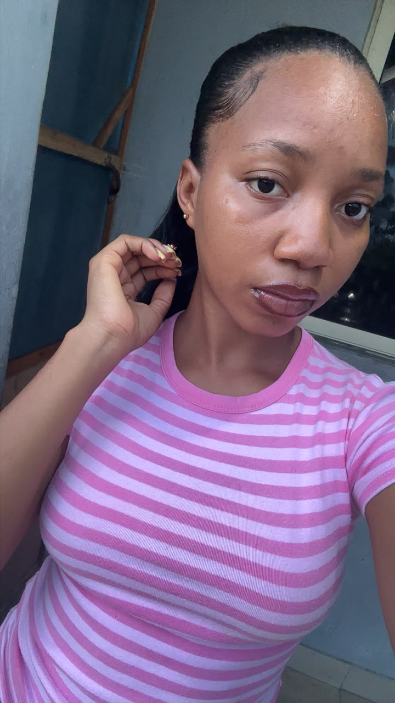
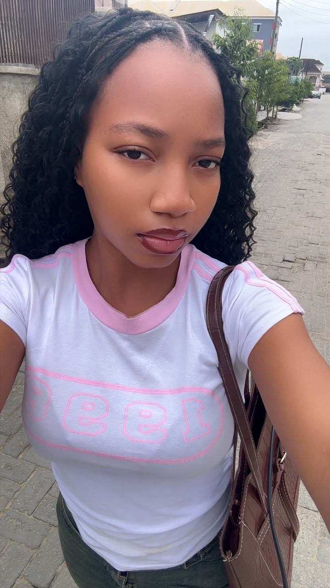
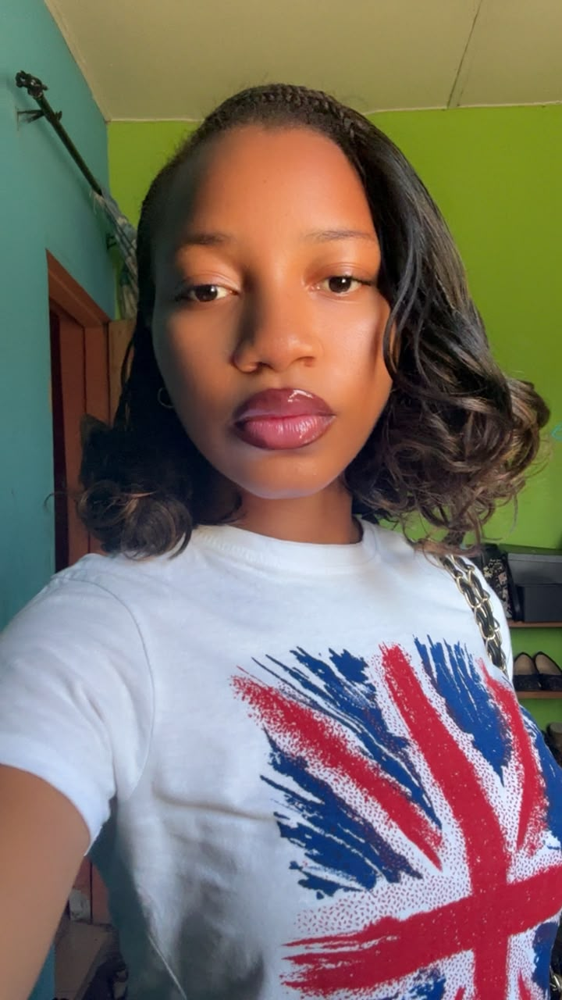
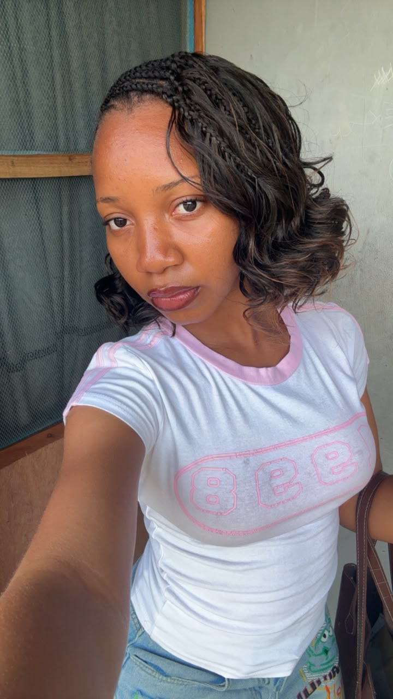

✳
Entrepreneurship
Learning how ideas can grow into useful products and businesses.
I'm Ayorinde Eniola Celine, a Computer Science student who enjoys learning, exploring creative ideas and understanding what makes people connect with products.




I’m still learning and finding my direction. These are some of the areas I enjoy exploring.
Learning how ideas can grow into useful products and businesses.
Understanding people, studying products and learning what customers value.
Exploring the basics of HTML, CSS and JavaScript as I build my skills.